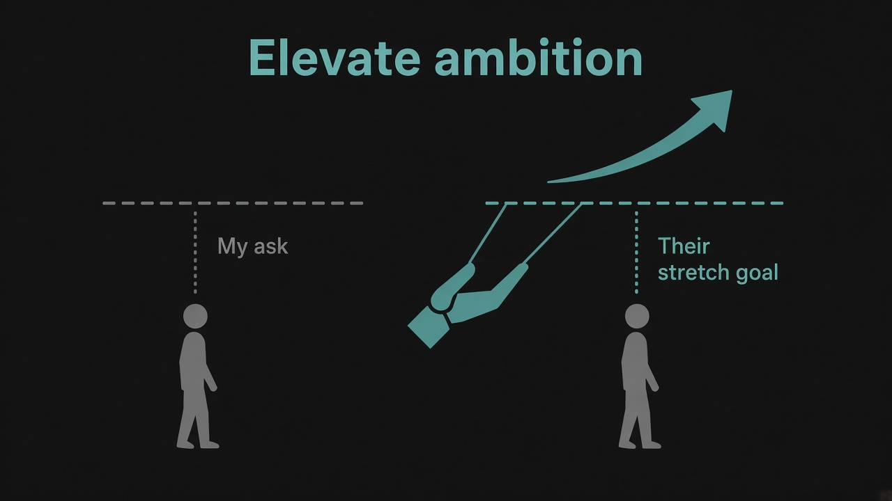

Elevate others' ambition — the scarce PM skill
Source: Lenny Rachitsky (@lennysan) quoting Tara Seshan (@tarstarr)
original post
What it claims
Lenny highlighted Tara Seshan's line: the scarce PM skill right now is elevating other people's ambition. Not writing better specs, not shipping faster alone — raising the bar for what teammates, stakeholders, and partners believe is possible. In an AI-heavy world, execution leverage is cheap; the rare craft is expanding what the room aims for.
Why it matters for a PO
POs set Product Goals and negotiate scope. Default mode is compressing asks to what feels safe. Elevating ambition means helping stakeholders want the outcome that actually moves the needle — then slicing delivery — instead of accepting a timid ask and calling it “alignment.”
3 takeaways
- Treat “what should we aim for?” as part of the PO job, not only “what can we finish this Sprint.”
- Ambition elevation is coaching: reframe constraints into a sharper goal, then negotiate the first slice.
- Scarcity signal: if your backlog only shrinks ambition, you're optimizing delivery theater, not value.
Practice this week
In your next stakeholder or planning conversation, write two goals — the ask they walked in with, and a one-step-higher ambition that still fits the Product Goal. Propose the higher one first, then negotiate the MMF slice. Note what changed in their energy and the outcome quality.